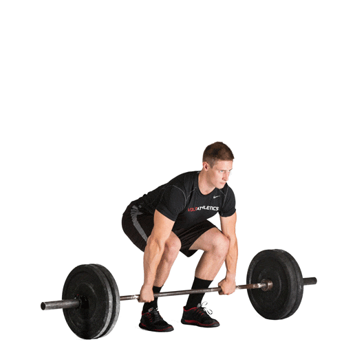
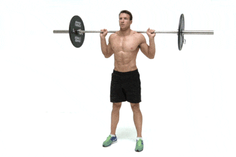
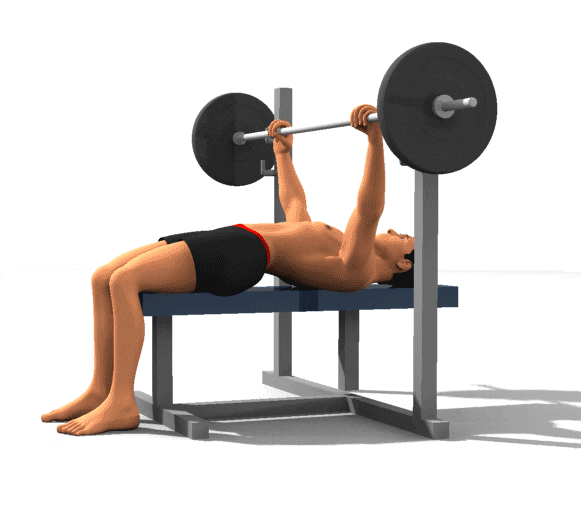
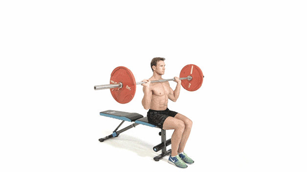

1. 데드리프트(등)
데드리프트(deadlift)는 가장 대표적인 웨이트
트레이닝 운동 중 하나로, 바닥에 놓인 바벨을
잡고 팔을 구부리지 않은 자세로 엉덩이 높이까지
들어 올리는 식으로 행한다.

2. 스쿼트(하체)
스쿼트(squat)는 가장 대표적인 웨이트
트레이닝 운동 중 하나로, 바벨,덤벨을 들거나
맨몸으로 무릎 관절을 굽혔다 펴는 동작을 반복
함으로써 하반신의 근육을 성장시킨다

3. 벤치 프레스(가슴,삼두)
벤치 프레스(bench press)는 가장 대표적인 웨이트
트레이닝 중 하나로, 벤치에 등을 대고 누워서
바벨 및 덤벨을 가슴 높이까지 내렸다가 굽혔던
팔꿈치를 쭉 펴면서 들어올리는 방식으로 실시한다
팔꿈치와 무릎이 구부러지지 않도록 주의합니다.

4. 숄더 프레스(어깨)
숄더 프레스는 일어나서 또는 앉아서 진행 할 수 있습니다.
먼저 가슴을 열어준 다음 덤벨을 들어 귀쪽에 위치 시킵니다
팔꿈치를 피면서 덤벨을 머리 위로 들어줍니다.
머리 위로 올린 덤벨을 다시 처음 위치로 천천히 내려줍니다.
5. 바벨컬(이두)
무산소 운동의 하나로 이두근을 키우는데 필수적인
운동입니다. 일반적으로 바벨과 덤벨 사용이 둘다
가능한 운동입니다. 바벨을 들고 선 상태에서 이두근
의 당기는 힘을 이용해 바벨을 들어올립니다 더이상
팔꿈치가 접혀지지 않는 한까지 이두근에 압박을
준 뒤 천천히 바벨을 내려 준비자세로 돌아갑니다.